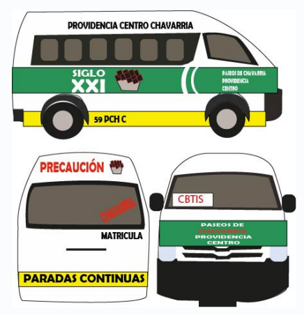

Ruta Chavarria
Rutas
- Centro de Pachuca: Ubicado en el corazón de la ciudad, este es el punto de
inicio de nuestro viaje
- Hospital General de Pachuca: Un importante centro médico ubicado sobre la
avenida Pachuca-Tulancingo.
- Plaza Universidad: Un concurrido centro comercial al norte de la ciudad.
- Universidad Autónoma del Estado de Hidalgo (UAEH): Una de las
universidades públ icas más prestigiosas del estado.
- La Providencia Siglo XXI: Un fraccionamiento moderno al sur de Pachuca
- CBTis 286: Centro de Bachi l lerato Tecnológico Industrial y de Servicios No.
286, ubicado en Paseos de Chavarría.
- Neto Paseos de Chavarría I: Última parada antes de l legar a la Universidad
Tecnológica Mineral de la Reforma.
Recuerda
Destino:
Universidad Tecnológica Mineral de la Reforma (UTMiR)
Indicaciones para l legar a la UTMiR desde la última parada:
Baja en la parada "CBTis 286" y camina hacia la izquierda. La universidad se
encuentra a solo unos pasos de distancia.
Precauciones
- Verifica la ruta: Antes de subir a la combi , asegúrate de que sea la que va por
"CEBTis" y no la de "Flores". La de "CEBTis" te dejará más cerca de la
universidad.
- El tiempo de espera puede variar: Las combis pueden pasar seguidas o
tardarse un poco, hasta un máximo de 15 minutos
- Precio: El precio del pasaje en todas las combis de Pachuca es de $10 pesos
en cualquier parada.
importante
- Horario: El servicio de combis funciona de 6:00 am a 9:00 pm todos los días
de la semana
Caracteristicas de la Urban

Ruta de la Urban
Mapa de la Ruta